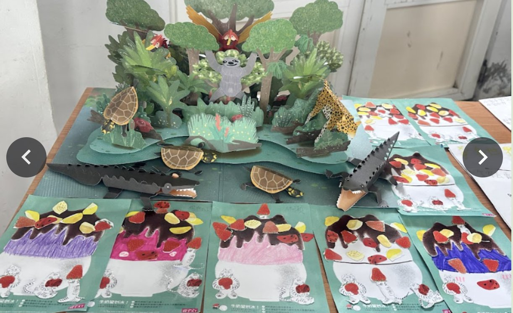
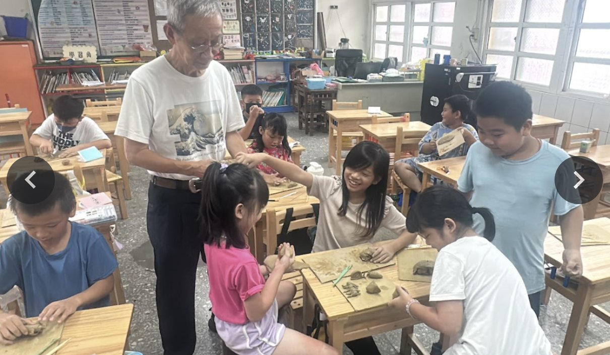

Storytelling Workshop & Showcase說故事實作課程暨成果展
Stories are not just for listening—they are for creating! We invited professional storytellers from a local association to our campus for a series of engaging hands-on workshops. Students were guided to transform their wild imaginations into tangible works of art.
From sculpting with clay and painting to the final presentation, they not only honed their storytelling skills but also gained immense confidence and a sense of accomplishment by becoming unique little storytellers.
At the beginning of the class, we listened attentively as the teachers from the storytelling association guided us into imaginative worlds with their lively narratives. This segment allowed us to draw inspiration from the stories, laying a wonderful foundation for the hands-on creation that followed.
The power of a story comes from limitless imagination! Whether it was sculpting with clay, creating collages, or making 3D dioramas, the children not only sparked their creativity but also learned how to visualize their abstract ideas, adding more detail and life to their stories.
After completing our creations, it was time for the most exciting part: the final showcase! The children bravely took to the stage with their artworks, sharing the inspiration behind their stories with teachers and classmates.


故事不僅是用來聽的，更是用來創造的！我們邀請了說故事協會的老師們來到校園，透過一系列豐富有趣的實作課程，引導孩子們從零開始，將天馬行空的想像力轉化為實體的作品。
從動手捏塑、彩繪，到最後的成果發表與分享，孩子們不僅學習了說故事的技巧，更在創作與分享的過程中，獲得了滿滿的成就感與自信心，成為獨一無二的小小故事家。
在課程的開始，我們專注地聆聽說故事協會老師的引導，老師透過生動有趣的講解，帶領我們進入一個又一個充滿想像力的故事世界。這個環節讓孩子們從故事中汲取靈感，為接下來的動手創作打下了美好的基礎。
故事的力量源於無限的想像！在說故事協會老師的引導下，我們將腦中的故事畫面，透過巧手轉化為具體的藝術作品。無論是黏土捏塑、剪貼彩繪，還是製作立體場景，孩子們在創作過程中，不僅激發了創意，也學習了如何將抽象的想法具象化，為他們的故事增添了更多細節與生命力。
動手完成作品後，就是最精彩的成果發表時間！孩子們帶著自己的創作，勇敢地站上舞台，與老師和同學們分享故事的由來與靈感。雖然有些緊張，但看著他們自信地展現作品、清楚地回答問題，每個孩子都化身為小小故事家。